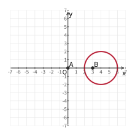

ホーム ＞ 数学C ＞ 複素数平面
方程式 \(|z-0|=2\,|z-(3)|\) を満たす点 \(z\) 全体はどんな図形か。
\(|z-\alpha|=|z-\beta|\) は垂直二等分線。\(|z-\alpha|=k|z-\beta|\ (k\neq1)\) は円（アポロニウスの円）。\(z=x+yi\) とおいて2乗し、展開して整理する。
\(z=x+yi\) とおいて両辺を2乗する。
中心 \(4\)、半径 \(2\) の円（アポロニウスの円）。

【答案（テストに書く形）】
答